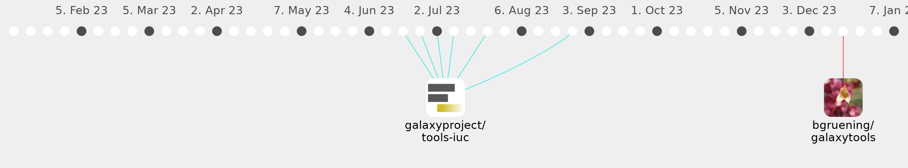

Galaxy Community Activities
PlushZ
PlushZ
https://github.com/PlushZ
Commits all-time:
67
Commits last year:
23

galaxyproject/tools-iuc
(21)
78d20dc
453320e
3ee2b3c
2faa10e
7201c49
f7c3286
c626f02
d0538d8
f2d037e
228e9a3
e9df553
51fcab5
4e376ff
a6a726c
924f048
df8cae0
ad5c5bb
7f1b536
b9d7493
061fee0
1d5ff6c
bgruening/galaxytools
(2)
13791ad
39b8201